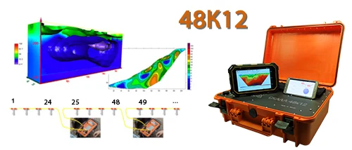
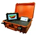
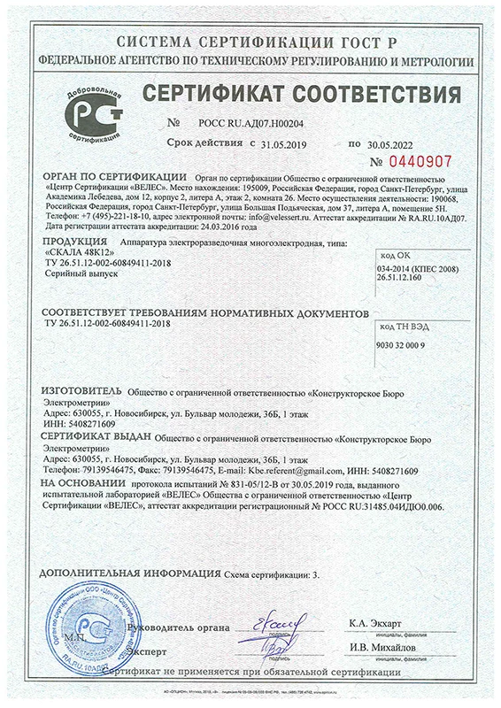
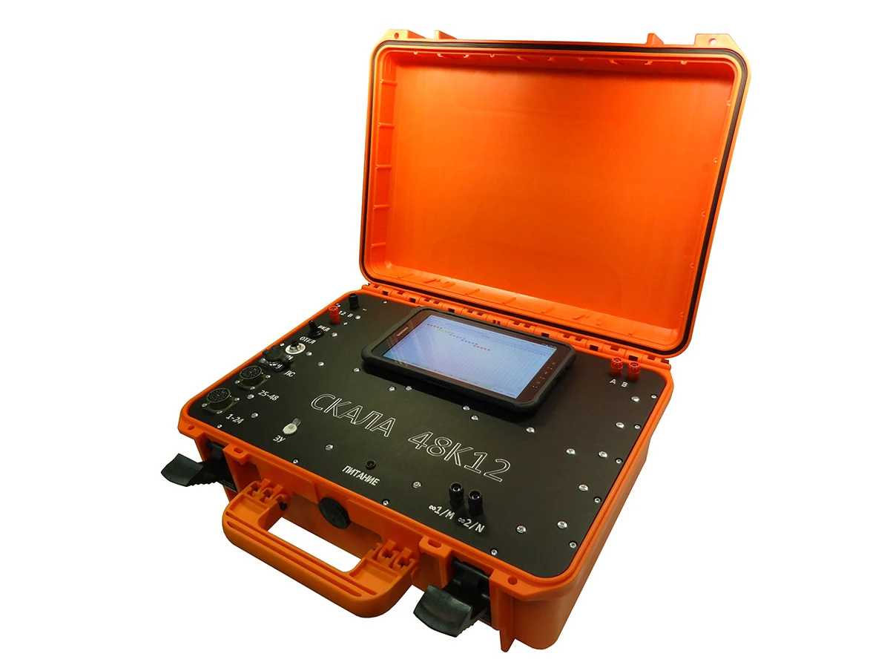
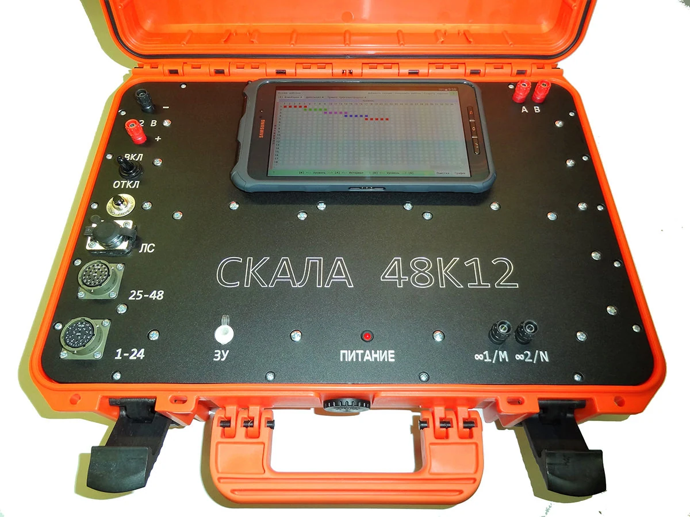
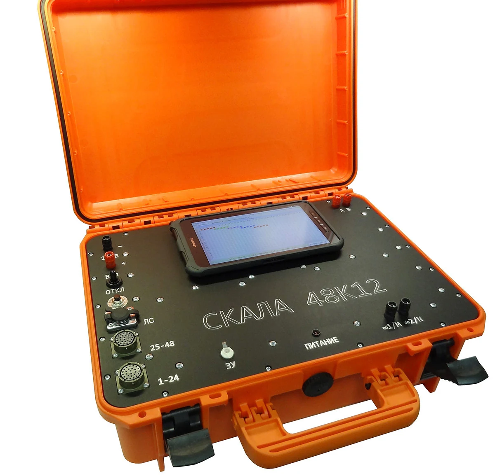
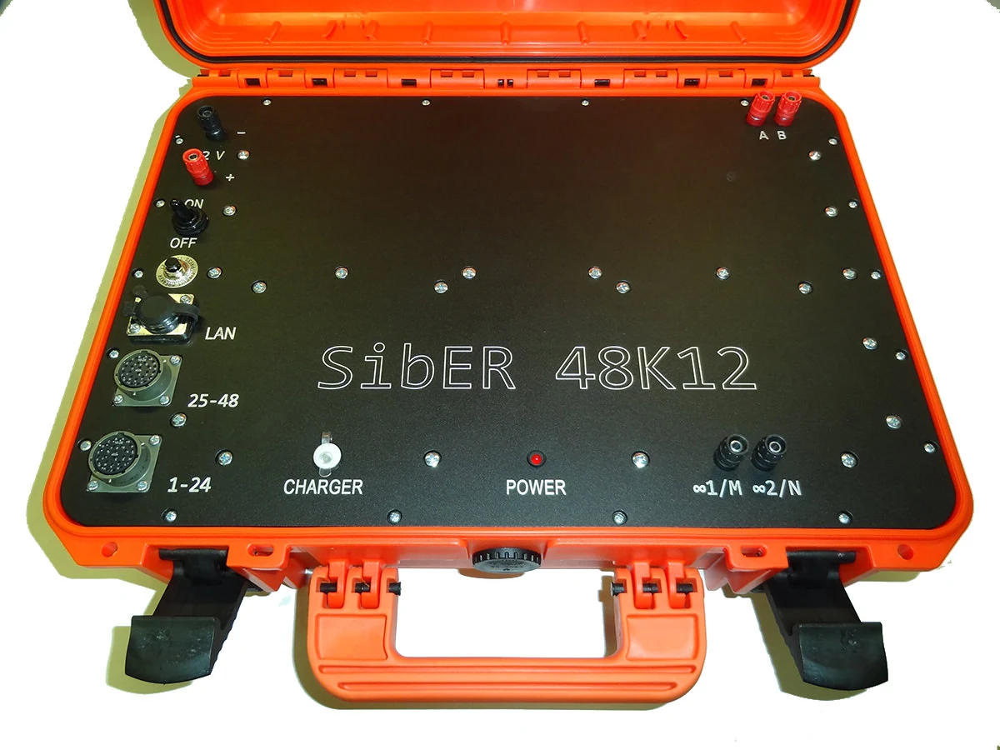

Описание
НОВИНКА 2018 ГОДА!
12-канальная электроразведочная аппаратура для работ методом сопротивлений и вызванной поляризации “Скала 48К12” (ревизия H/W:01)
– 48 электродов, 12 измерительных каналов и мощный источник в едином корпусе при массе 12 кг.
– Управление с телефона, планшета или компьютера с ОС Android или Windows через Wi-Fi и Ethernet при помощи унифицированного ПО Xeris.
– Обновление программного обеспечения аппаратуры с управляющего устройства за несколько секунд.
– Русский и английский варианты графического пользовательского интерфейса.
– Поддержка измерительных установок типа Шлюмберже, дипольной, трёхэлектродной (прямой и обратной), двухэлектродной и других.
– Составные шаблоны измерений для сбора данных в едином рабочем цикле с возможностью последующей раздельной обработки.
– Легко редактируемые пользовательские шаблоны измерений.
– Сплошная и выборочная проверка качества заземления электродов с графическим представлением результатов.
– Запись всех отсчётов выходных и входных сигналов с возможностью последующей визуализации, анализа и обработки.
– Автоматическая обработка входных сигналов и оценка качества данных.
– Выборочное отключение неиспользуемых электродов.
– Регулируемое энергопотребление для сохранения заряда аккумулятора.
– Автоматическая диагностика обрывов цепи, коротких замыканий и проблем с питанием.
– Визуализация выходных и входных сигналов во время работы.
– Инструменты для тестирования настроек измерения в полевых условиях.
– Редактирование настроек измерения без перерыва в работе.
– Возобновление прерванных сеансов измерения.
– Техника сплошного профилирования с переносом первого сегмента электродного кабеля предыдущей расстановки в конец следующей.
– Варианты электродных кабелей из одного или нескольких сегментов.
– Режим ВЭЗ.
– Совместимость с ПО res2dinv, res3dinv, ertlab, x2ipi.
Базовый комплект поставки:
– аппаратура Скала 48К12;
– зарядное устройство для внутреннего аккумулятора;
– кабель для подключения внешнего источника питания 12В;
– внешний пульт управления на базе Андроид ОС;
– сетевой кабель;
– деревянный ящик для транспортировки.
Произведено ООО “Конструкторское Бюро Электрометрии”
Технические характеристики
| Общие
Электроды: 2 x 24 + 2 удалённых Внешнее питание: 12 В Резервное питание: 12 В, 2.3 А*ч Интерфейс: Wi-Fi, Ethernet Степень защиты: IP67 (транспортировка), IP54 (эксплуатация) Рабочая температура: -20 … +50 °C Влажность окружающей среды: не более 90% Габариты: 464 x 366 x 176 мм Масса: 12 кг |
| Источник
Тип: источник напряжения Выходное напряжение: 1 … 500 В Выходной ток: до 2 А Выходная мощность: до 220 Вт Форма выходных импульсов: прямоугольные переменной полярности Длительность выходных импульсов: до 10 с Длительность пауз между выходными импульсами: от 20 мс Защита от короткого замыкания на выходе: есть |
| Многоканальный измеритель
Количество каналов: 12 Входное сопротивление: 10 МОм Количество отсчётов: 1 … 500 Частота дискретизации: 50, 60 Гц Разрядность АЦП: 24 бит Входное напряжение: -20 … 20 В Разрешение: 1 мкВ Подавление помех промышленных частот: не менее 90 дБ Защита от перенапряжения: до 1 кВ |
| Модуль питания
Защита от неправильной полярности на входе: есть Диапазон напряжений питания: 10.5 … 15 В Индикация отсутствия питания: звуковая, светодиодная |
Технические характеристики могут быть изменены без предварительного уведомления.
Комплектация и цены
Загрузки
Руководство по эксплуатации (27.11.2019) |
|
Руководство оператора (28.08.2019) |
|
Xeris – программное обеспечение для ОС Android и Windows |
 |
Применение
– инженерная геология;
– строительство;
– экология;
– археология;
– коммунальное хозяйство;
– гидрогеология;
– специальные задачи.
Галерея





Оборудование, комплектация и консультации: связаться с КБ Электрометрии.